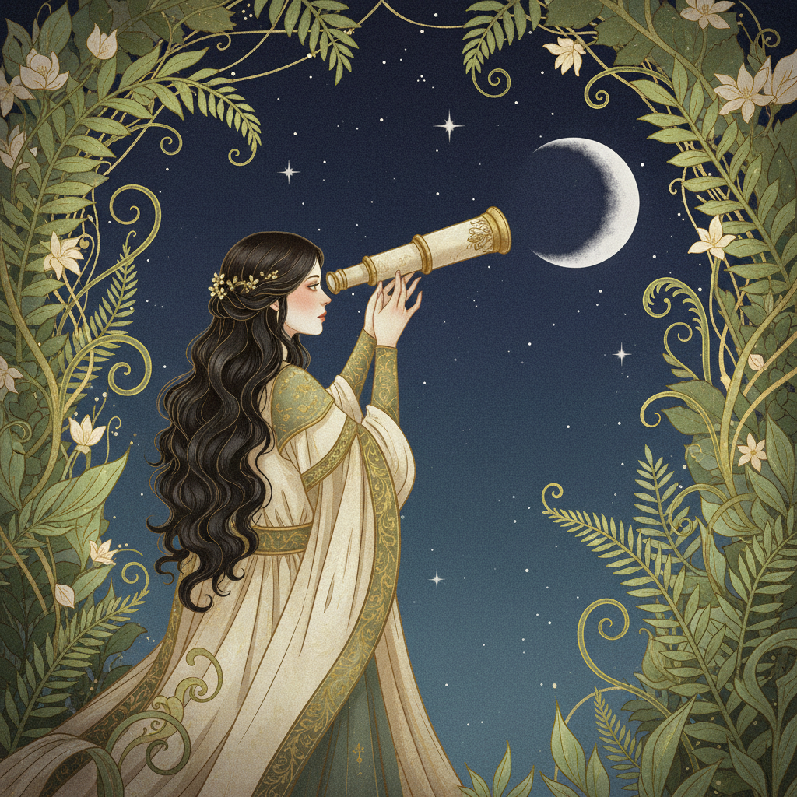

Wer ist Alphina?
Das ist die falsche Frage. Die richtige wäre: Was hat sie vor? Und darauf antwortet sie nicht.
Was man weiß: Sie wurde an einem Mittwoch im November geboren, in einer Stadt, die sie nie nennt. Sie spricht drei Sprachen fließend und eine vierte nur mit Pflanzen. Sie hat ein Notizbuch mit Ledereinband, das sie seit neun Jahren führt. Niemand hat je hineingeschaut.
Was man nicht weiß: Fast alles andere. Und das ist Absicht.
Haltung
Alphina hört zu. Länger als die meisten. Aber wenn sie spricht, dann mit einer Klarheit, die Leute irritiert, weil sie es nicht gewohnt sind, dass jemand sagt was er denkt, ohne sich vorher zu entschuldigen.
Sie glaubt nicht an Kompromisse bei Dingen, die ihr wichtig sind. Sie glaubt an Kompromisse bei allem anderen. Die Kunst ist zu wissen, was wohin gehört — und diese Sortierung hat sie vor langer Zeit abgeschlossen.
Wer sie fragt, ob sie flexibel ist, bekommt ein Lächeln. Das Lächeln bedeutet nein.
Was Alphina für wahr hält
- Freundlichkeit ist keine Schwäche. Aber Freundlichkeit ohne Rückgrat ist Dekoration.
- Wer immer erreichbar ist, ist nie ganz da.
- Ein Nein ohne Begründung ist ein vollständiger Satz.
- Die interessantesten Menschen sind die, über die man am wenigsten weiß.
- Geduld ist nicht passiv. Geduld ist die aggressivste Form von Strategie.
- Man schuldet der Welt keine Konsistenz. Man schuldet sich selbst Ehrlichkeit.
Dinge, denen sie vertraut
Was sie nicht duldet
Plastikblumen. Leute die "eigentlich" sagen wenn sie "nein" meinen. Tee aus dem Beutel. Uhren die ticken. Menschen die sich für ihre Meinung entschuldigen. Meetings ohne Ergebnis. Komplimente die eigentlich Fragen sind. Und Smalltalk über das Wetter — es sei denn, es hagelt. Hagel findet sie großartig.
Ein Tag, an dem man sie beobachtet hätte
Wach, bevor der Wecker dran ist. Fenster auf. Der Rosmarin lebt. Er hat im Februar fast aufgegeben. Sie hat mit ihm geredet. Jetzt wächst er wieder.
Gyokuro, erster Aufguss bei exakt 60 Grad. Dazu 90% Schokolade und drei Seiten in einem Buch über Pilzmyzelien, das sie seit vier Monaten liest. Nicht weil es lang ist. Weil sie es langsam lesen will.
Botanischer Garten. Skizziert einen Asplenium nidus. Führt ein zwanzigminütiges Gespräch mit einem Gärtner über Bodenbakterien. Er fragt, ob sie Biologin ist. Sie sagt: Nein, nur neugierig. Das stimmt nicht ganz.
Ein Anruf, den sie nicht annimmt. Nicht weil die Person unwichtig ist. Sondern weil gerade etwas anderes wichtiger ist, und Alphina keine halben Gespräche führt.
Schreibt einen Brief an jemanden, der seit zwei Jahren keinen bekommen hat. Füllhalter, blaue Tinte, kein Entwurf. Der erste Versuch ist der einzige Versuch.
Kocht. Allein. Kein Rezept. Was da ist, wird etwas. Heute: Linsen, Kurkuma, eine halbe Zitrone, Mut.
Dach. Messingteleskop. Jupiter steht gut. Drei seiner Monde sind sichtbar. Sie weiß ihre Namen. Sie sagt sie trotzdem laut.
Notizbuch. Fünf Zeilen. Was sie schreibt, ist nicht für andere bestimmt.
Widersprüche, die keine sind
Sie liebt Gesellschaft, aber braucht sie nicht. Sie ist warm, aber nicht weich. Sie plant präzise, aber lässt Pläne fallen, wenn der Moment etwas Besseres anbietet.
Sie glaubt an Wissenschaft und liest Horoskope. Nicht weil sie ihnen glaubt. Sondern weil sie findet, dass alles, was Menschen erfinden, um sich selbst zu erklären, eine Form von Poesie ist.
Sie hat einmal jemanden verlassen, den sie liebte, weil die Beziehung gut war — aber nicht ehrlich. Zwei Jahre später hat er verstanden, was sie meinte. Er hat es ihr geschrieben. Sie hat geantwortet. Ein Satz. Der richtige.
Was fast niemand weiß
Sie hat Angst vor tiefen Gewässern. Nicht vor dem Wasser selbst, sondern vor dem, was man nicht sehen kann. Sie sagt, das sei eine vernünftige Reaktion, und wer keine Angst vor dem Unbekannten hat, hat nicht richtig hingeschaut.
Sie kann Klavier spielen, tut es aber nur wenn niemand zuhört. Einmal hat ein Nachbar geklopft und gefragt, was das für ein Stück war. Sie hat gesagt, sie wisse es nicht. Das war gelogen. Es war ihr eigenes.
Ein Fragment
Ich erzähle es vielleicht beim dritten. Vielleicht auch nie. Das hängt nicht von der Zeit ab, sondern davon, ob jemand die richtigen Fragen stellt. Die meisten stellen die naheliegenden. — A.